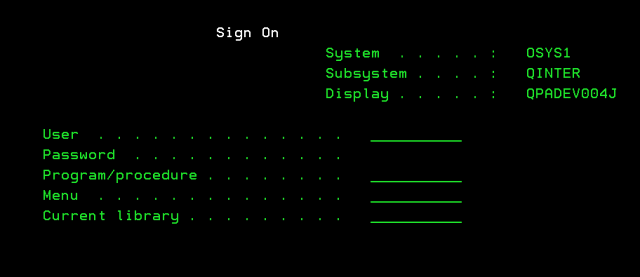

The best way to move this project forward is to start by explaining the current state of the court’s data and its data analysis. While deep dives into how we document cases and court proceedings are not the most exciting aspect of the project, they are a necessary part of making any lasting change. I’m not sure I’ll be doing my colleagues, and the young people I serve, any favors if this project does not address what does, and does not work, with our current system. By sharing how the court currently captures, stores, and transforms data, I will have an easier time communicating some of the decisions that I make regarding this project.
JEMS was designed and coded by Anderson Consulting (then Accenture) in the late 1990s and deployed in early 2000s. The front end was created with Lansa The back-end is currently on MS SQL Server. This database stores all of our client data: Names, contact information, contacts, family members, charges, case notes, interventions, successes, and violations of probation. From what I’ve seen, the back-end is a solid relational database, centered around a young person’s ID number.
The State’s Attorney office creates the JEMS ID in a separate system (CRIMES). In the early days of JEMS, there was an issue of duplicate IDs for the young people, however, this error has been (mostly) corrected. Once a young person’s data transfers from CRIMES into JEMS, it becomes the responsibility of the probation department to maintain that data. The interface-green screen, text driven-does have a steep learning curve, but for data entry, the system works.

Out of the box, JEMS does not produce many reports. Users can pull up what has been entered by nearly any other user, supervising POs can get an overview of their officers’ contacts and case notes, and some managers can print out reports on the success rates of programs and interventions. Given the structure of the back-end, if someone can explain the query to the JEMS caretakers, all sorts of reports can be generated. JEMS does export to MS Excel natively, so our data/research division uses that functionality to generate reports on length of detention stays and rates of violations of probation. Those reports are then used for a handful of tasks, including program evaluation and case-load equity1; however, management has significant discretion in determining appropriate case load levels. In short, JEMS fits basic needs of our department’s data entry, but its reporting features do leave a lot to be desired.
It is exceptionally easy to dismiss and mock JEMS-I do it on a daily basis. It is antiquated, counter-intuitive, and of questionable utility to the average field officer. It is also, however, a huge shift for the way Cook County Probation operates: A digital, centralized location that stores all of the contact information (Address, phone number, etc) and all of the interventions (home visits, school visits, programs, referrals, etc) of the young people we work with. Put differently, since its deployment in the 2000s, the court has collected data on at least 41,000 young people2. Data that would have otherwise been stored in paper family folders. That is a data set that is perfect for my project. In short, JEMS has a significant amount of data that has the potential to show the court not just what works, but why it works. That alone would be worth the price, and the hassle, of JEMS.
It is far from perfect, but JEMS has data that has real utility: Tens of thousands of young people, hundreds of thousands of interventions, and hundreds of programs and innovations are all documented in JEMS, in a format that is easily accessible. With this data, the court can be better informed on what has, and has not, worked across Cook County for nearly two decades. In short, the data in JEMS is screaming for a modern data analysis. That is exactly what I plan on doing.